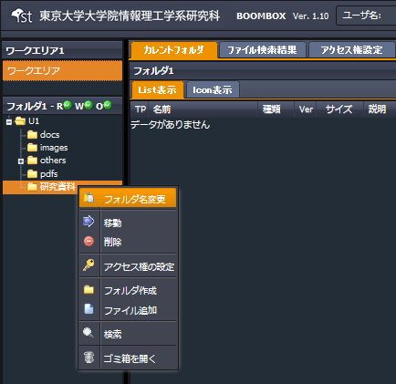
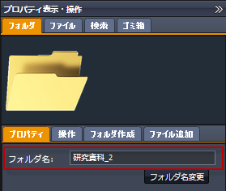
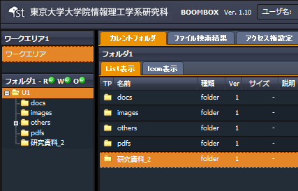

SecretFilesマニュアル
4.SecretFilesサービス(操作編)
4.2.6 フォルダ名変更
フォルダの名称の変更手順を説明します。
(1) 対象フォルダを選択し右クリックメニューを開く
『フォルダ名変更』をクリックします。

(2) 自動的に以下構成の右ペインが開く
右ペインにて、【フォルダタブ】＋【プロパティタブ】が開きます。
フォルダ名を変更して、『フォルダ名変更』をクリックします。

(3) フォルダ名の変更完了
右ペイン、中央ペイン共に、フォルダ名が変更されます。
